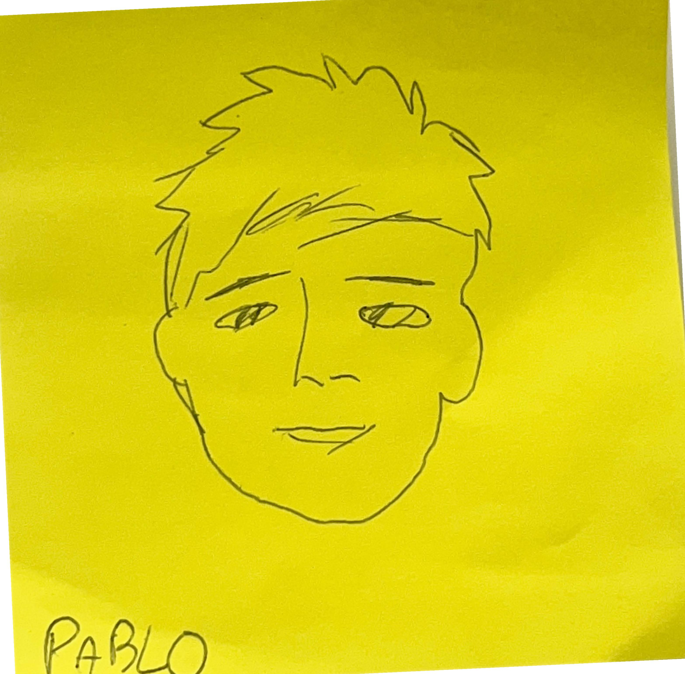

Manual para editar una página web
Retrato Fran by Neus
FRAN
////////
|-, ,-|
(| L |)
(_`-´__)
__|_|__
( )
- Crear la carpeta en nuestro disco duro, trabajar en local.
- Abrir el programa: Visual Studio, arastrar la carpeta al explorador o open folder.
- Crear New file: nombrarlo como index.html
- Editar el fichero.
- Abrir el navegador y entrar en GitHub.
- Creamos un repositorio.
- Add files y upload files.
- Una vez que aparece index.html en el directorio de nuestro repositorio, vamos a settings, en la barra de la izquierda buscamos "pages" y en "GitHub pages" cambiamos "none" a "main" y guardamos.
- Esperamos un poco y aparecerá URL del repositori publicado en formato "web pages".
Esbozo
